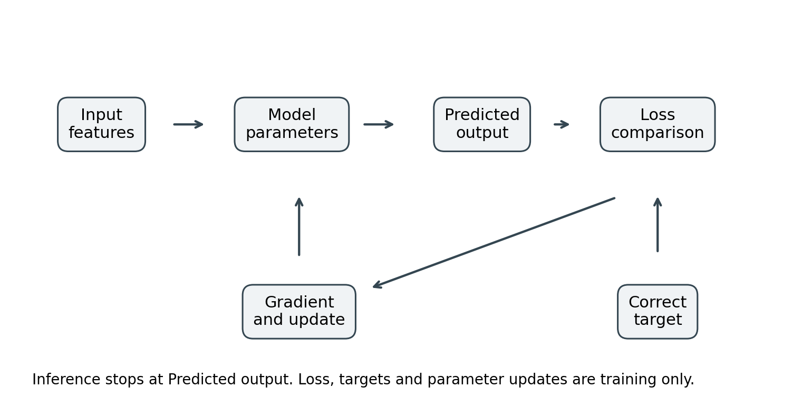

3 Numbers tensors parameters and learning
A model is a computation with adjustable values
Suppose you want to estimate the time needed to pack an order from the number of items. A simple model might be predicted minutes = weight times item count plus bias. The weight tells the model how much time another item adds. The bias accounts for setup work that happens even for a small order. These are parameters: values learned from examples.
If weight is 0.7 and bias is 2, an order with ten items receives a prediction of nine minutes. The input is ten; the output is nine. The architecture is the form of the computation, multiplication followed by addition. Training changes 0.7 and 2. It does not automatically change the formula into a different architecture.
A hyperparameter is a choice that controls the experiment rather than a value directly fitted by the ordinary training update. The learning rate, number of layers, batch size, and maximum sequence length are hyperparameters. A trained parameter can influence many outputs; a hyperparameter can influence the way all trained parameters develop.
The distinction is practical. If you change the architecture, an old checkpoint may no longer have the right shapes. If you change the learning rate, the checkpoint can often still be loaded, but the future optimization trajectory changes. If you change preprocessing, even identical weights may receive different inputs and produce different behavior.
Features are the information you make available
The item count is a feature, a numeric representation of something about the input. Other possible features are fragile-item count, total weight, or whether gift wrapping is required. A model cannot reliably infer a factor that neither the input nor correlated information reveals. If packing time depends heavily on employee experience and that information is absent, some uncertainty is unavoidable.
A feature is not automatically legitimate merely because it improves a score. Suppose your dataset includes actual dispatch time when you are trying to predict dispatch delay before packing begins. That field would not exist at prediction time. Training on it creates a misleading shortcut. A useful feature must be available at the time and place where the system will operate.
Text and images begin as familiar human objects, but a training program needs numeric arrays. A text tokenizer converts bytes or pieces of text into integer identifiers. An image decoder converts an image file into pixel values. An audio decoder produces sampled amplitudes. A categorical feature can become an integer index or a set of indicator values. Representation is the bridge between the real input and the model's computation.
A loss turns a desired output into a training signal
For a numeric prediction, squared error is a simple loss: subtract the correct answer from the prediction and square the difference. A prediction of nine when the target is eleven has squared error four. The sign is removed, and larger errors receive disproportionately more penalty. Averaging over examples produces mean squared error, or MSE.
For classification, the model commonly produces one score per class. These raw scores are called logits. Softmax converts logits into positive values that sum to one. Those values can be interpreted as the model's distribution over classes, although they are not automatically well calibrated probabilities. Cross-entropy loss rewards the model for assigning probability to the correct class.
If the target class receives probability 0.8, the negative natural logarithm is about 0.223. If it receives probability 0.1, the loss is about 2.303. The second prediction is penalized more. When you see a language-model training loss, you are often seeing an average version of this calculation over many next-token predictions.
A target must match the task. If your actual goal is to extract an invoice date exactly, a fluent paragraph about invoices is not a substitute. If your goal is to rank relevant passages, predicting the exact wording of an answer may be an indirect and inefficient objective. You choose the output representation and loss together.
The gradient tells you how a small change affects loss
Return to predicted minutes = weight times item count plus bias. Suppose the model predicts too little for a ten-item order. Changing the weight upward would increase the prediction and, for a sufficiently small change, reduce that example's squared error. The gradient records the local rate at which the loss changes as a parameter changes.
Gradient descent updates a parameter by subtracting learning rate times gradient. The learning rate controls the step size. It is not a percentage accuracy target and not the amount of data the model learns per step. A large step can jump past a useful region and make loss unstable. A very small step can make progress unnecessarily slow.
Backpropagation computes gradients through a chain of operations. Automatic differentiation libraries record the operations needed to calculate those derivatives. You do not need to hand-differentiate an entire transformer. You do need to know that the loss must be connected to the parameters you intend to train, and that the gradient must remain intact until the update. Detaching a tensor or entering an inference-only context at the wrong place can break learning. PyTorch's autograd reference describes this computation-graph mechanism. F01
A gradient is a local signal from the selected objective and examples. It is not a judgment about truth, usefulness, or ethics. If your targets are contradictory, the optimizer will seek a compromise. If they reward an undesirable shortcut, the optimizer may learn that shortcut efficiently.

Figure 2 Training compares predictions with targets and updates parameters. Inference uses the fitted model without the loss and update path.
What one training step actually means
A basic training step has five stages. First, obtain a batch of examples and transform them into tensors. Second, run the model forward to produce predictions. Third, compare those predictions to targets with the loss. Fourth, run backward to calculate gradients. Fifth, let the optimizer update trainable parameters, then clear gradients before starting a new independent update.
The forward pass creates intermediate values called activations. Backward may need those activations. This is why training uses memory beyond the weights. The optimizer may also maintain history, such as running estimates of gradient direction and magnitude. Inference ordinarily does not need these training-specific states.
An optimizer is the update rule. Stochastic gradient descent is a simple example. Adam and AdamW adapt updates using running statistics. AdamW applies a decoupled weight-decay term rather than mixing that term into its momentum estimates. The optimizer's defaults are library decisions, not universal best settings. F02
Learning does not mean storing a clean database
Parameters encode statistical regularities distributed across many values. They are not ordinary document records with reliable insert, update, and delete operations. Some examples can be memorized, particularly when repeated or distinctive. Yet a model may also distort facts, combine them, or fail to retrieve them on demand. Training on a document does not guarantee accurate recall of every statement.
This matters when choosing between training and retrieval. Training can teach a response pattern or a recurring domain skill. Retrieval can provide a particular current passage at answer time. They can work together. Treating weights as a replacement for an auditable knowledge store often creates unnecessary maintenance and evaluation problems.
Exercises
For the packing-time example, calculate the prediction for five items when weight is 0.7 and bias is 2. The answer is 5.5 minutes. Now change only the bias to 3; every order's prediction increases by one minute. Change only the weight to 0.8; a five-item order increases by half a minute and a ten-item order by one minute.
A batch contains 16 sequences of 128 token IDs. Write its shape. Then imagine each token is represented by 64 numbers and write the new shape. Explain why the token IDs should be integers while the representations may be floating point.
Describe one task where an essential piece of information is missing from the proposed input. Explain why a bigger model does not reliably solve that information problem.